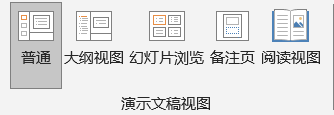
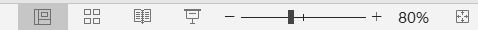
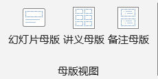
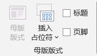
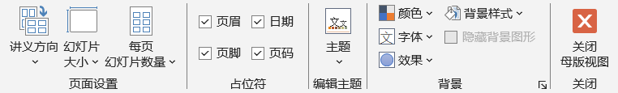
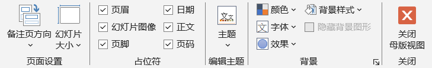

视图
View
- 演示文稿视图 Presentation Views
- 视图在PPT环境的右下角也有体现，同缩放标尺在一起
-
普通 Normal大纲视图 Outline View幻灯片浏览 Slide Sort阅读视图 Reading View备注页 - Notes Page，新版本
 演示文稿视图 -
 状态栏中的视图 - 母版视图 Master Views
-
 母版视图 -
幻灯片母版 Slide Master
PPT的高效开发离不开幻灯片母版的使用
应该首先在幻灯片母版中设计页面版式，再应用到相应的幻灯片上
如果需要调整页面版式，只需要修改幻灯片母版即可
每个新建的PPT都有一些默认的版式
每个版式都有名字
充分、高效利用占位符设计版式
 幻灯片母版中的占位符 讲义母版 Handout Master打印并分发给用户，便于在用户在听讲观看过程中参考使用
多张幻灯片打印到一张纸上
主要设置有：页眉、页脚、编号和时间
当然也可以给自己作为教案使用
 讲义母版 备注母版 Notes Master给幻灯片添加注释，主要是供演讲者使用，在放映时起到提示和辅助的作用
主要设置同讲义母版，多了"幻灯片图像"和"正文"
 备注母版 -
Tips讲义母版、备注母版可以设置的样式不多在打印预览页面才能看到讲义母版、备注母版的实际效果